A communicable disease is one that can be transmitted or spread from one person or species to another, through either direct or indirect contact [1]. A multitude of different communicable diseases are currently reportable in Texas including tuberculosis and many types of sexually transmitted diseases. Incidence rates for communicable diseases in this chapter are presented as crude rates, without age-adjustment.
Tuberculosis
Tuberculosis (TB) is a chronic infection caused by the Mycobacterium tuberculosis bacterium. Although most people infected with M. tuberculosis harbor the bacterium with no symptoms (latent TB), some people do eventually develop active TB disease. TB is spread from person to person through the air. Only people with active TB disease can spread the bacteria to others [2]. TB usually affects the lungs, although it sometimes can also affect other parts of the body such as the brain, the kidneys, or the spine. TB disease can cause serious health problems, including death, if left untreated [2].
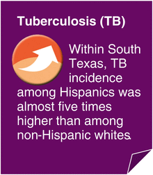
A total of 11,181 TB cases were reported in the USA in 2010 [3]. In addition to these active TB cases, more than 11 million people in the USA are estimated to currently have latent TB infection [4]. TB incidence in the USA was much higher among African-Americans (7.0/100,000), Asians (22.5/100,000), and Hispanics (6.5/100,000) than among non-Hispanic whites (0.9/100,000) in 2010 [3]. Nationwide, males have a higher risk of TB disease than females, and people in older age groups are more at risk for TB than people of younger ages [5]. Foreign-born persons are also disproportionately affected by TB. In 2010, the incidence of TB disease was 11 times higher among foreign-born persons in the USA than among persons born in the USA [3]. A TB infection can develop into active TB disease as a result of conditions or exposures that can reduce a person’s immunity such as HIV infection, diabetes, or chemotherapy treatment. Other risk factors for TB include low income, long-term drug or alcohol use, and living or working in prisons or nursing homes [6].
Tuberculosis in South Texas
The incidence of active TB disease in South Texas during 2006–2010 was 8.2/100,000, a higher incidence of TB than individuals living in the rest of Texas and nationwide (Fig. 4.1). The 2006–2010 average annual incidence of TB in South Texas was 2.3 times higher than the TB rate reported nationwide in 2010.
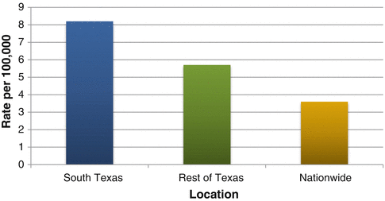
Fig. 4.1
Incidence of active tuberculosis (TB) disease by location. Source: Texas data: TB/HIV/STD Epidemiology and Surveillance Branch, Texas Department of State Health Services, 2006–2010. Nationwide data is for 2010 only, obtained from Pratt et al. 2011 [3]
Hispanics in South Texas had a higher incidence of TB (10.2/100,000) than did Hispanics in the rest of Texas (7.3/100,000) in 2006–2010. TB incidence among South Texas Hispanics was almost five times higher than the incidence among non-Hispanic whites (Fig. 4.2).
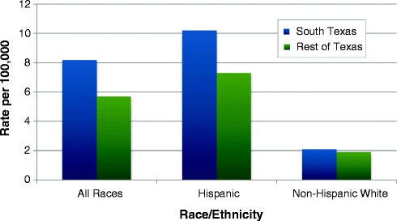
Fig. 4.2
Incidence of active tuberculosis (TB) by location and race/ethnicity, 2006–2010. Source: TB/HIV/STD Epidemiology and Surveillance Branch, Texas Department of State Health Services
Among Hispanics, the TB incidence increased sharply with age, in contrast with a more gradual age increase among non-Hispanic whites (Fig. 4.3). Hispanics aged 45 or older had the highest TB incidence, 17.4/100,000.
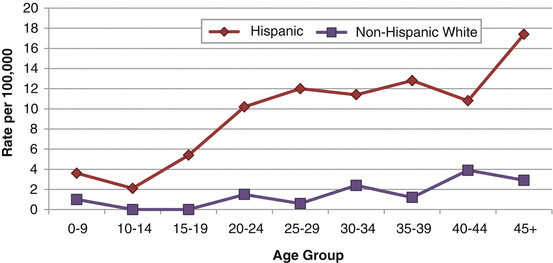
Fig. 4.3
Incidence of tuberculosis in South Texas by age group and race/ethnicity, 2006–2010. Source: TB/HIV/STD Epidemiology and Surveillance Branch, Texas Department of State Health Services
Males in South Texas had an incidence of TB more than twice as high as the incidence in females. When stratifying by sex and race/ethnicity, TB incidence estimates ranged from 14.0/100,000 in Hispanic males to 1.1/100,000 in non-Hispanic white females (Fig. 4.4).
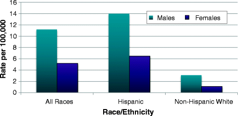
Fig. 4.4
Incidence of tuberculosis in South Texas by sex and race/ethnicity, 2006–2010. Source: TB/HIV/STD Epidemiology and Surveillance Branch, Texas Department of State Health Services
In 2006–2010, the incidence of TB in Bexar County (5.3/100,000) was lower than the incidence in South Texas as a whole (8.2/100,000). However, TB estimates in Webb County (15.2/100,000) and the four-county Lower Rio Grande Valley region (12.3/100,000) were 1.5–2 times higher than in all of South Texas (Fig. 4.5).
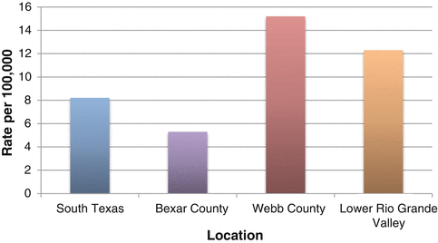
Fig. 4.5
Incidence of tuberculosis in selected South Texas locations, 2006–2010. Source: TB/HIV/STD Epidemiology and Surveillance Branch, Texas Department of State Health Services
HIV/AIDS
HIV (human immunodeficiency virus) is a human retrovirus that infects and slowly depletes a type of white blood cells known as T-lymphocytes or CD4+ T-lymphocytes. These white blood cells are essential to maintaining an effective immune response. HIV gradually destroys the body’s ability to fight infections and certain cancers by damaging or killing immune system cells [7]. People with HIV have what is called HIV infection. Some of these people will develop AIDS (acquired immunodeficiency syndrome) as a result of their HIV infection [7]. HIV is most commonly transmitted by having unprotected sex with a partner who is infected. HIV can also be spread through contact with infected blood such as sharing drug needles or syringes or through contaminated blood transfusions. Women infected with HIV can transmit the virus to their babies during pregnancy or birth or through breast milk [8].
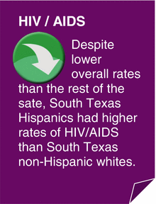
Many people do not have any symptoms when they first become infected with HIV. This “asymptomatic” infection period can differ greatly among individuals. Some people may begin to experience symptoms within just a few months, while others may remain symptom free for more than 10 years [8, 9]. AIDS refers to the most advanced stages of HIV infection [8]. People with AIDS often contract opportunistic infections that do not usually affect healthy people. In AIDS patients, these infections are frequently severe and are sometimes fatal, because the immune system has been so damaged by HIV that it can no longer resist bacteria, viruses, parasites, or other microbes [9]. People with AIDS are also particularly susceptible to certain cancers [10]. No cure exists for HIV or AIDS. However, a number of drugs currently exist that can slow the progression of HIV infection as well as fight associated cancers and infections [9, 10].
In 2008, approximately 1.2 million individuals in the USA were estimated to be living with either HIV or AIDS, of which an estimated 20 % were undiagnosed and unaware that they had HIV [11]. There were an estimated 17,774 AIDS deaths in the USA in 2009. The HIV/AIDS epidemic in the USA continues to disproportionately affect minority groups. The rate of new HIV infection in 2010 was more than eight times higher in African-Americans and almost three times higher in Hispanics than in non-Hispanic whites [12]. In 2009, 77 % of newly diagnosed HIV cases in the USA were male [11]. Major risk factors for HIV/AIDS include having unprotected sex with multiple partners or with men who have sex with men, sharing needles during drug use, or already having hepatitis, tuberculosis (TB), or another sexually transmitted disease (STD) such as syphilis, herpes, or chlamydia [7, 10].
HIV/AIDS in South Texas
In 2006–2010, the average annual incidence of HIV/AIDS in South Texas was 11.3/100,000, a lower rate than the incidence in the rest of Texas (18.1/100,000). Overall, the incidence of HIV/AIDS was about 60 % higher in the rest of Texas than in South Texas (Fig. 4.6). In South Texas, Hispanics had a higher incidence of HIV/AIDS (11.4/100,000) than non-Hispanic whites (8.2/100,000) (Fig. 4.6).
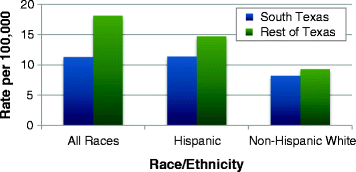
Fig. 4.6
Incidence of HIV/AIDS by location and race/ethnicity, 2006–2010. Source: TB/HIV/STD Epidemiology and Surveillance Branch, Texas Department of State Health Services
In South Texas, the incidence of HIV/AIDS was more than 4.5 times higher in males (18.8/100,000) than females (4.1/100,000). Individuals aged 20–44 had significantly higher rates of HIV/AIDS than other age groups. The incidence of HIV/AIDS was about two times higher in South Texas metropolitan counties (12.1/100,000) than in nonmetropolitan counties (5.8/100,000). Bexar County had a higher incidence of HIV/AIDS (16.8/100,000) than South Texas as a whole (11.3/100,000), whereas the incidence of HIV/AIDS in Webb County (9.9/100,000) was lower than that seen in all of South Texas. The incidence of HIV/AIDS in the Lower Rio Grande Valley region (10.9/100,000) was similar to the incidence in South Texas as a whole (Fig. 4.7).
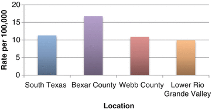
Fig. 4.7
Incidence of HIV/AIDS in selected South Texas locations, 2006–2010. Source: TB/HIV/STD Epidemiology and Surveillance Branch, Texas Department of State Health Services
Syphilis
Syphilis is a sexually transmitted disease (STD) caused by the Treponema pallidum bacterium. Syphilis has been called “the great imitator” because many possible symptoms are associated with the disease, and these symptoms often mirror ones seen in many other diseases [13, 14]. Syphilis is most commonly spread by sexual contact with an infected individual [13]. The syphilis bacterium is transmitted by direct contact with a syphilis sore; sores usually occur on the genitals or anus but can also occur on the lips or in the mouth. Syphilis can also be transmitted from an infected mother to her baby during pregnancy [14]. The primary stage of syphilis is characterized by one or more small, round sores, called chancres, that are located where the bacterium entered the body. Because chancres are usually not painful, can occur inside the body, and heal without treatment, symptoms of primary syphilis may go unnoticed. If left untreated, the syphilis infection progresses to the secondary stage, which is usually marked by a skin rash. Symptoms of secondary syphilis may be mild and will also go away without treatment. However, without treatment, syphilis infection is still present in the body. Although there may be no outward signs or symptoms for many years after secondary syphilis, untreated syphilis infection may damage internal organs such as the heart, brain, nervous system, eyes, bones, and joints. Late-stage syphilis infection, which occurs in about 15 % of untreated individuals, can cause blindness, deafness, mental illness, paralysis, heart disease, and even death [13, 14]. Untreated syphilis in pregnant women is associated with a high risk of adverse pregnancy outcomes such as miscarriage, stillbirth, preterm birth, and infant mortality [14, 15]. Syphilis is curable with antibiotics, but treatment cannot repair damage already done to the body by syphilis infection [14].
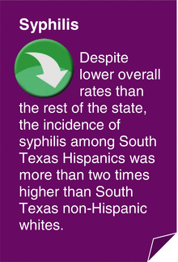
In 2010, 45,834 new cases of syphilis (at all stages) were reported in the USA including 13,774 cases of primary and secondary syphilis. Nationwide, the incidence of primary and secondary syphilis was seven times higher among men than among women in 2010. The incidence of primary and secondary syphilis in the USA was eight times higher among African-Americans and two times higher among Hispanics than among non-Hispanic whites [16]. The age-specific incidence of syphilis in the USA varied depending on race/ethnicity and sex, although among both Hispanic and non-Hispanic white women, the highest incidence of primary and secondary syphilis was observed among those aged 20–24 [15]. Men who have unprotected sex with other men have a higher risk of syphilis infection than the general population [16, 17]. Other risk factors for syphilis include having unprotected sex and having sex with multiple partners [13, 17].
Syphilis in South Texas
Overall, the average annual incidence of syphilis (all stages) during 2006–2010 was lower in South Texas (19.8/100,000) than in the rest of Texas (25.9/100,000). However, Hispanics in South Texas had a higher incidence of syphilis (21.9/100,000) than did Hispanics in the rest of Texas (18.7/100,000). In South Texas, the incidence of syphilis among Hispanics was more than two times higher than the incidence among non-Hispanic whites (Fig. 4.8).
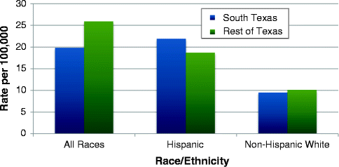
Fig. 4.8
Incidence of syphilis by location and race/ethnicity, 2006–2010. Source: TB/HIV/STD Epidemiology and Surveillance Branch, Texas Department of State Health Services
South Texas females had a much lower incidence of syphilis (13.3/100,000) than males (26.4/100,000). The incidence of syphilis in South Texas was highest among individuals aged 20–29 (more than 45/100,000). Syphilis incidence was about three times higher in South Texas metropolitan counties (21.5/100,000) than in nonmetropolitan counties (7.2/100,000) in 2006–2010. The incidence of syphilis was higher in Bexar County (34.8/100,000) than in South Texas as a whole (19.8/100,000) in 2006–2010. However, syphilis incidence was lower in Webb County (13.6/100,000) and in the Lower Rio Grande Valley region (12.9/100,000) compared to all of South Texas during this timeframe (Fig. 4.9).
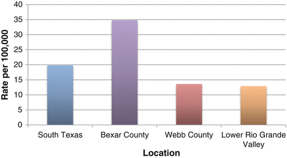
Fig. 4.9
Incidence of syphilis in selected South Texas locations, 2006–2010. Source: TB/HIV/STD Epidemiology and Surveillance Branch, Texas Department of State Health Services
Chlamydia
Chlamydia is a sexually transmitted disease (STD) caused by the Chlamydia trachomatis bacterium. Chlamydia bacteria live in vaginal fluid and semen and can be transmitted to a partner during vaginal, anal, or oral sex. Chlamydia can also be transmitted from an infected mother to her infant during a vaginal childbirth. Chlamydia can also be found in the throat, and eyes in both sexes [18, 19]. Individuals frequently do not know that they are infected with chlamydia, because symptoms of chlamydia are often mild or completely absent. This is problematic, because if left untreated, chlamydia infection can cause irreversible reproductive and other health problems, particularly in women [18]. Chlamydia is the most frequently reported notifiable disease in America, with more than 1.3 million cases reported in 2010 [16, 18]. However, because most individuals are unaware that they have chlamydia and thus do not get tested, underreporting of this disease is considerable. It is estimated that 2.8 million persons in the USA are actually infected with chlamydia every year [18].
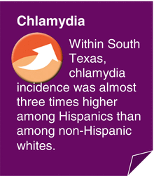
In 2010, the reported incidence of chlamydia infection among women in the USA was more than two-and-a-half times higher than the incidence among men, most likely because a greater number of women are screened for chlamydia than men. Among US women, the highest age-specific chlamydia incidence was observed among those aged 15–24, while age-specific incidence of chlamydia in men was highest among those aged 20–24 [16]. If sexually active, teenage girls and young women are at higher risk of chlamydia infection than older women, because the cervix has not yet fully matured [18].
Nationwide, the incidence of chlamydia among African-Americans is more than eight times higher than the incidence among non-Hispanic whites. Chlamydia incidence is also more than four times higher among Native Americans and nearly three times higher among Hispanics than among non-Hispanic whites [16]. Other risk factors for chlamydia include having unprotected sex and having multiple sex partners [18].
Chlamydia in South Texas
The average annual incidence of chlamydia in South Texas was 429.4/100,000 in 2006–2010, a higher rate than the incidence of chlamydia in the rest of Texas (387.4/100,000). Although Hispanics also had a higher incidence of chlamydia in South Texas than in the rest of Texas, for non-Hispanic whites, incidence in South Texas was similar to the incidence in the rest of Texas (Fig. 4.9). Chlamydia incidence was almost three times higher among Hispanics than among non-Hispanic whites in South Texas (Fig. 4.10).
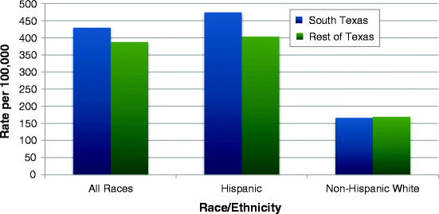
Fig. 4.10
Incidence of chlamydia by location and race/ethnicity, 2006–2010. Source: TB/HIV/STD Epidemiology and Surveillance Branch, Texas Department of State Health Services
The incidence of chlamydia among South Texas females (666.3/100,000) was more than 3.5 times higher than the incidence among males (185.8/100,000). As observed nationwide, individuals aged 15–24 had a much higher incidence of chlamydia than any other age groups. In South Texas, individuals aged 20–24 had an incidence of 1,970.7/100,000.
Overall, chlamydia incidence was significantly higher in South Texas metropolitan counties (443.9/100,000) than nonmetropolitan counties (322.2/100,000) (Fig. 4.11).
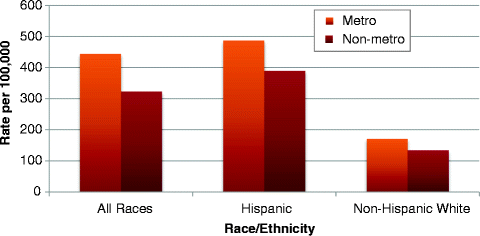
Fig. 4.11
Incidence of chlamydia in South Texas by county designation and race/ethnicity, 2006–2010. Source: TB/HIV/STD Epidemiology and Surveillance Branch, Texas Department of State Health Services
In 2006–2010, the incidence of chlamydia was higher in Bexar County (578.5/100,000) than in South Texas as a whole (429.4/100,000). However, chlamydia incidence estimates were lower in Webb County (340/100,000) and the Lower Rio Grande Valley region (333.5/100,000) than in South Texas (Fig. 4.12).
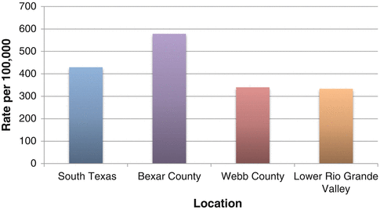
Fig. 4.12
Incidence of chlamydia in selected South Texas locations, 2006–2010. Source: TB/HIV/STD Epidemiology and Surveillance Branch, Texas Department of State Health Services
Gonorrhea
Gonorrhea is a sexually transmitted disease (STD) caused by the Neisseria gonorrhoeae bacterium. This bacterium grows easily in many parts of the reproductive tract, including the cervix, uterus, and fallopian tubes in women, and the urinary tract in both women and men [16, 20]. Gonorrhea can also grow in the throat, mouth, eyes, and anus. Gonorrhea bacteria can be transmitted by contact with the penis, mouth, vagina, or anus of an infected individual; ejaculation is not necessary for the disease to be spread. Gonorrhea can also be transmitted from an infected mother to her baby during childbirth [20]. If left untreated, gonorrhea can cause permanent health problems in both sexes, and can cause a painful testicular condition called epididymitis in men. Untreated gonorrhea infection also appears to increase the risk of both transmitting and acquiring HIV [16, 20]. Gonorrhea can usually be successfully treated and cured with antibiotics; however, drug-resistant gonorrhea infections are becoming more common in the U.S., making treatment more difficult [16, 20].
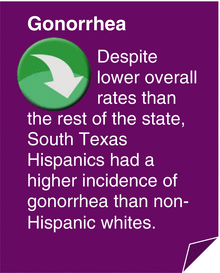
Gonorrhea is the second-most frequently reported notifiable disease in the USA. There were 309,341 reported cases of gonorrhea in the USA in 2010; however, because many people with gonorrhea are asymptomatic and thus do not get tested, this disease is often underreported [16, 20]. The CDC estimates that more than 700,000 new gonorrhea infections occur each year [20]. In 2010, the Southern region of the USA, which includes Texas, had a higher incidence of gonorrhea than the other regions. Nationwide, the incidence of gonorrhea is currently slightly higher among women than men, and age-specific gonorrhea incidence is highest among women aged 15–24 and men aged 20–24 [16]. The incidence of gonorrhea is nearly 19 times higher among African-Americans, more than 4.5 times higher among Native Americans, and more than twice as high among Hispanics than among non-Hispanic whites [16]. Like most STDs, the major risk factors for gonorrhea include having unprotected sex and sex with multiple partners [20, 21].
Gonorrhea in South Texas
Overall, the average annual incidence of gonorrhea in South Texas (98.5/100,000) was much lower than the incidence of gonorrhea in the rest of Texas (132.1/100,000). Non-Hispanic whites in South Texas had a slightly lower incidence of gonorrhea than non-Hispanic whites in the rest of Texas, and Hispanics in South Texas had a higher incidence than Hispanics in the rest of Texas (Fig. 4.13). The high overall incidence of gonorrhea observed in the rest of Texas is possibly due to a higher percent of African-Americans residing in the rest of Texas than in South Texas (as African-Americans have a higher incidence of gonorrhea than any other USA racial/ethnic group).
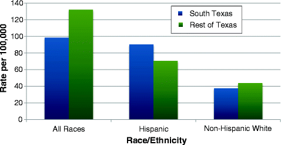
Fig. 4.13
Incidence of gonorrhea by location and race/ethnicity, 2006–2010. Source: TB/HIV/STD Epidemiology and Surveillance Branch, Texas Department of State Health Services
Hispanics had a higher incidence of gonorrhea than non-Hispanic whites, both in South Texas and in the rest of Texas. In 2006–2010, the average annual incidence of gonorrhea among Hispanics in South Texas (90.3/100,000) was 2.4 times higher than among non-Hispanic whites (37.6/100,000) (Fig. 4.13).
In South Texas, the incidence of gonorrhea was higher for females (101.3/100,000) than for males (95.6/100,000). Individuals aged 20–24 had a higher risk of gonorrhea (408.2/100,000) than all other age groups in South Texas. The incidence of gonorrhea was 2.7 times higher in South Texas metropolitan counties (106.5/100,000) than nonmetropolitan counties (39.3/100,000). Bexar County had a much higher incidence of gonorrhea (185.1/100,000) than all of South Texas (98.5/100,000); however, the gonorrhea incidence estimates for Webb County (24.7/100,000) and the Lower Rio Grande Valley region (27.2/100,000) were much lower than for South Texas as a whole (Fig. 4.14). In 2006–2010, the incidence of gonorrhea in Webb County was almost four times lower than the incidence of gonorrhea in South Texas.
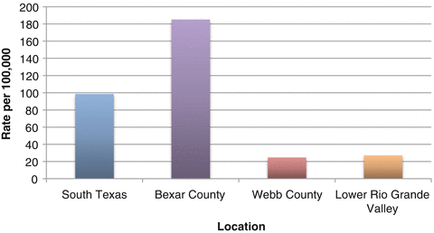
Fig. 4.14
Incidence of gonorrhea in selected South Texas locations, 2006–2010. Source: TB/HIV/STD Epidemiology and Surveillance Branch, Texas Department of State Health Services
Summary
Table 4.1
Summary table of crude incidence rates in South Texas, the rest of Texas, and nationwidea for each of the communicable diseases analyzed
Incidence per 100,000 population | |||
|---|---|---|---|
Health indicator | South Texas, 2001–2005 | Rest of Texas, 2001–2005 | Nationwide, 2010 |
Tuberculosis | 8.2 | 5.7 | 3.6 |
HIV/AIDS | 11.3 | 18.1 |
b
|
Syphilis | 19.8 | 25.9 |
b
|
Chlamydia | 429.4 | 387.4 | 426.0 |
Gonorrhea | 98.5 | 132.1 | 100.8 |
References
1.
Merriam-Webster Dictionary. 2012. http://www.merriam-webster.com/medical/communicable%20disease. Accessed May 2012.
2.
National Institute of Allergy and Infectious Diseases. Detailed explanation of tuberculosis (TB). 2009. http://1.usa.gov/RFCULq. Accessed May 2012.
3.
Pratt R, Price S, Miramontes R, Navin T, Abraham BK. Trends in tuberculosis incidence – United States, 2010. MMWR. 2011;60:333–7.
4.
Centers for Disease Control and Prevention. New, simpler way to treat latent TB infection. 2011. http://www.cdc.gov/Features/TuberculosisTreatment. Accessed May 2012.
5.
Centers for Disease Control and Prevention. Reported tuberculosis in the United States 2010. Atlanta, GA: U.S. Department of Health and Human Services, Centers for Disease Control and Prevention; 2011.
6.
Mayo Clinic Staff. Tuberculosis: risk factors. Mayo Clinic. 2011. http://www.mayoclinic.com/health/tuberculosis/DS00372/DSECTION=4. Accessed May 2012.
7.
National Institute of Allergy and Infectious Diseases. HIV/AIDS. 2011. http://www.niaid.nih.gov/topics/hivaids/understanding/Pages/Default.aspx. Accessed May 2012.
8.
Centers for Disease Control and Prevention. Basic information about HIV and AIDS. 2012. http://www.cdc.gov/hiv/topics/basic/. Accessed May 2012.
9.
Centers for Disease Control and Prevention. Living with HIV/AIDS. 2007. http://www.cdc.gov/hiv/resources/brochures/livingwithhiv.htm. Accessed May 2012.
10.
Mayo Clinic Staff. HIV/AIDS. Mayo Clinic. 2011. http://www.mayoclinic.com/health/hiv-aids/DS00005/. Accessed May 2012.
11.
Centers for Disease Control and Prevention. HIV in the United States: at a glance. 2012. http://www.cdc.gov/hiv/resources/factsheets/us.htm. Accessed May 2012.
12.
Centers for Disease Control and Prevention. HIV surveillance report, 2010, vol. 22. 2102. Atlanta, GA: U.S. Department of Health and Human Services. http://www.cdc.gov/hiv/topics/surveillance/resources/reports/. Accessed May 2012.
13.
National Institute of Allergy and Infectious Diseases. Syphilis. 2010. http://www.niaid.nih.gov/topics/syphilis/Pages/default.aspx. Accessed May 2012.
14.
Division of STD Prevention. Syphilis – CDC fact sheet. Centers for Disease Control and Prevention. 2010. http://www.cdc.gov/std/syphilis/STDFact-Syphilis.htm. Accessed May 2012.
15.
16.
Centers for Disease Control and Prevention. Sexually transmitted disease surveillance 2010. Atlanta, GA: U.S. Department of Health and Human Services, Centers for Disease Control and Prevention; 2011.
17.
Mayo Clinic Staff. Syphilis: risk factors. Mayo Clinic. 2010. http://www.mayoclinic.com/health/syphilis/ds00374/dsection=risk-factors. Accessed May 2012.
18.
Division of STD Prevention. Chlamydia – CDC fact sheet. Centers for Disease Control and Prevention. 2012. http://www.cdc.gov/std/chlamydia/STDFact-Chlamydia.htm. Accessed May 2012.
19.
National Institute of Allergy and Infectious Diseases. Chlamydia. 2010. http://www.niaid.nih.gov/topics/chlamydia/Pages/default.aspx. Accessed May 2012.
20.
Division of STD Prevention. Gonorrhea – CDC fact sheet. Centers for Disease Control and Prevention. 2012. http://www.cdc.gov/std/Gonorrhea/STDFact-gonorrhea.htm. Accessed May 2012.
21.
Mayo Clinic Staff. Gonorrhea: risk factors. Mayo Clinic. 2011. http://www.mayoclinic.com/health/gonorrhea/ds00180/dsection=risk-factors. Accessed May 2012.